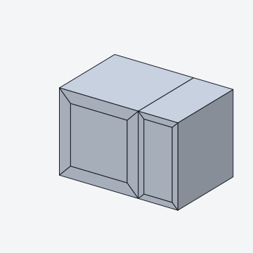
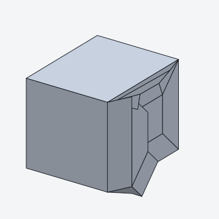
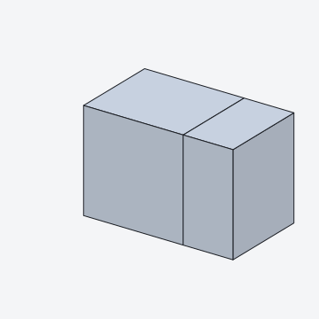
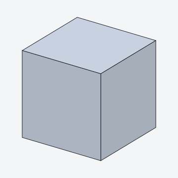
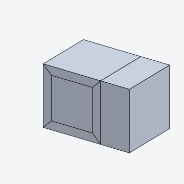
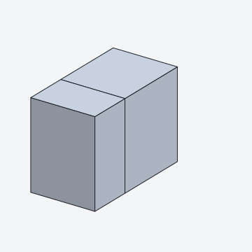
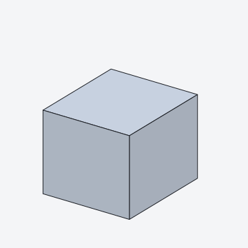
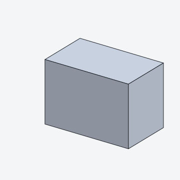

The owner approved this step before it started.
Rebuild round zero so that every trace ends in a different shape. The first run, in entry 0003, had 10,000 traces but only 7,518 different final meshes.
Decided by the owner on 2026-11-25: remove the repeats.
| File | Change |
|---|---|
executor.py | It now keeps a trace only when its final mesh is new. It keeps generating until it has the number of traces asked for. It prints how many repeats it skipped. |
data/round0.npz | Replaced. It now holds 10,000 traces with 10,000 different final meshes. It is 1.08 MB. |
The rule for a repeat is the final mesh, not the move list. Two different move lists can end in the same mesh, and both would leak into a test. Removing by final mesh removes both kinds.
The random seed is still 0, which makes the run exactly repeatable.
The machine is an Apple M2 Max with 12 cores. The run used one process.
| Phase | What it does | This run | Entry 0003 |
|---|---|---|---|
| Generate | Pick moves and run them until 10,000 new shapes exist | 4.05 s | 2.81 s |
| Save | Write the shard to disk | 0.48 s | 0.42 s |
| Load | Read the shard back from disk | 0.75 s | 0.62 s |
| Replay | Run every stored move list again and compare | 1.62 s | 1.42 s |
| Whole command | All of the above, plus starting Blender | 8.56 s | 6.34 s |
These are the final shapes of the first 24 traces. They are not hand-picked.








| Measure | This run | Entry 0003 |
|---|---|---|
| Traces | 10,000 | 10,000 |
| Different final meshes | 10,000 | 7,518 |
| Different move lists | 10,000 | 7,628 |
| Moves in total | 36,303 | 30,254 |
| Meshes stored | 46,303 | 40,254 |
| Faces in a final shape, mean | 15.8 | 14.1 |
| File size | 1.08 MB | 885 KB |
| Moves per trace | 1 | 2 | 3 | 4 | 5 |
|---|---|---|---|---|---|
| Traces, this run | 54 | 1,801 | 2,748 | 2,582 | 2,815 |
| Traces, entry 0003 | 1,958 | 1,968 | 2,030 | 1,950 | 2,094 |
| Move type | extrude | inset | slide |
|---|---|---|---|
| Times used | 12,340 | 12,166 | 11,797 |
| Check | Result |
|---|---|
| Read all 10,000 traces back from the shard and run their moves again | Every one rebuilt its stored meshes exactly |
| Count the different final meshes | 10,000 of 10,000 |
| Run the whole generation a second time and compare the files | Byte-identical, same SHA-1 |
traces.npz and traces.json are still the 20 samples from entry 0002.Write the shape check. It scores how close two shapes are by sampling points on both surfaces and measuring the average gap. It is needed before any model can be scored, and it can also answer the first open question above. This does not start until the owner agrees.